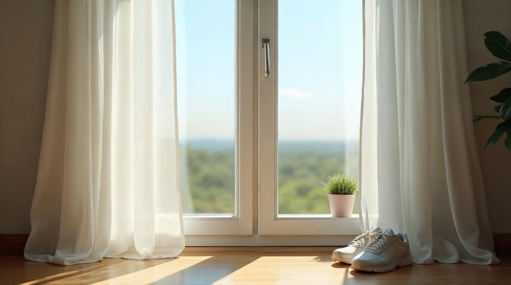
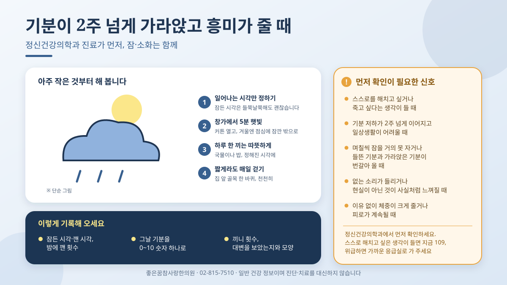

이종호 한의사 감수좋은꿈참사랑한의원 대표원장 (한의사 면허번호 19769)발행 2026-11-26 · 수정 2026-11-26
이 글의 차례
토요일 오전, 알람을 끄고도 한참을 누워 있습니다. 예전 같으면 벌써 일어나 커피를 내리고 밀린 빨래를 돌렸을 텐데, 오늘은 몸을 일으킬 이유가 떠오르지 않습니다. 좋아하던 드라마도 틀어 놓기만 하고 내용은 들어오지 않습니다. 이런 날이 벌써 몇 주째입니다.
기분이 가라앉는 날은 누구에게나 있습니다. 그런데 그 가라앉음이 2주 넘게 거의 매일 이어지고, 잠과 입맛, 즐거움까지 함께 줄었다면 이야기가 조금 달라집니다. 이럴 때는 마음의 병으로 진료를 받아 볼 때이고, 정신건강의학과에서 먼저 확인받으시길 권합니다. 저는 그 진료와 나란히 잠과 소화, 몸의 긴장을 함께 살피는 자리에 있습니다.
먼저 꼭 드리고 싶은 말이 있습니다. 스스로를 해치고 싶은 생각이 들거나 사라지고 싶다는 생각이 자꾸 든다면, 이 글을 끝까지 읽기보다 지금 109에 연락하거나 가까운 응급실로 가 주세요. 그 생각이 드는 것은 부끄러운 일이 아니고, 혼자 버틸 일도 아닙니다.
진료실에서 이런 말씀을 자주 듣습니다. 딱히 큰일이 있었던 것도 아닌데 왜 이러는지 모르겠다고요. 남들은 더 힘든 일도 견디는데 내가 약해서 그런 것 같다고 하시는 분도 있습니다. 그렇게 말씀하시는 동안에도 다들 출근을 하고, 아이를 챙기고, 부모님 전화를 받으며 하루를 해내고 계셨습니다.
가라앉은 마음으로 하루를 해내는 일은 겉보기보다 훨씬 많은 힘이 듭니다. 그동안 얼마나 애쓰셨을까 싶습니다. 오늘은 '왜 이렇게 됐을까'를 따지기보다, 지금 몸과 마음이 어디서 가장 버거운지부터 함께 찾아보았으면 합니다.
왜 마음이 가라앉으면 몸까지 무거워질까요
마음이 지치면 몸이 먼저 신호를 보내는 경우가 많습니다. 우울감을 오래 겪는 분들은 기분보다 "몸이 천근만근"이라는 말로 먼저 이야기를 꺼내곤 합니다. 아침에 일어나기 힘들고, 조금만 움직여도 기운이 빠지고, 밥맛이 없거나 반대로 자꾸 단것이 당깁니다.
오래 이어진 스트레스는 우리 몸의 긴장 체계를 계속 켜 둡니다. 스트레스 호르몬이 오래 높은 상태로 머물면 잠이 얕아지고, 소화가 더뎌지고, 쉽게 지칩니다. 우울감이 있는 분들에게서 이런 호르몬이 오히려 높게 나타나는 경우가 있다는 보고도 있습니다. 쉬지 못한 몸과 가라앉은 마음이 서로 꼬리를 무는 모양입니다.
한의학에서는 이런 상태를 기운이 한곳에 뭉쳐 잘 돌지 않는다고 표현하기도 합니다. 가슴이 답답하고 한숨이 잦고, 배는 더부룩하고 손발은 찹니다. 마음과 몸을 따로 나누지 않고, 하나의 흐름이 막힌 것으로 봅니다.
그래서 저는 기분이 가라앉았다고 오신 분께 마음 이야기만 하지 않습니다. 몇 시에 잠들고 몇 시에 깨는지, 하루에 몇 끼를 드시는지, 대변은 어떤지, 손발은 찬지까지 여쭙습니다. 마음을 직접 고치기는 어려워도, 몸의 한 군데라도 숨을 돌리게 하는 일은 함께 찾아볼 수 있기 때문입니다.
잠깐 지친 것과 오래 가라앉은 것은 어떻게 다를까요
모든 가라앉음이 우울증은 아닙니다. 큰일을 치른 뒤 며칠 기운이 없거나, 겨울 해가 짧아져 처지는 기분은 많은 분이 겪습니다. 아래 기준은 진단이 아니라, 진료를 미루지 말아야 할 때를 알아보는 길잡이로 봐 주세요.
기간: 2주라는 선
하루 이틀 우울했다가 주말에 친구를 만나고 기분이 돌아온다면 지친 것에 가깝습니다. 반면 기분이 가라앉은 날이 2주 넘게 거의 매일 이어지고, 좋은 일이 있어도 잘 올라오지 않는다면 정신건강의학과에서 확인받아 보시길 권합니다.
흥미: 좋아하던 것이 시들해졌는지
예전에 즐겁던 일이 아무렇지 않게 느껴지는지가 중요한 단서입니다. 산책이나 음악, 친구와의 통화처럼 원래 힘이 되던 일조차 귀찮아졌다면 단순한 피로와는 결이 다를 수 있습니다.
잠과 입맛: 몸의 리듬이 함께 흔들리는지
새벽에 일찍 깨서 다시 잠들지 못하거나, 반대로 하루 종일 자도 개운하지 않은 날이 이어집니다. 입맛이 뚝 떨어져 체중이 줄기도 하고, 반대로 허전함을 먹는 것으로 채우기도 합니다. 잠과 입맛이 함께 흔들리면 몸도 같이 지쳐 있다는 뜻입니다.
생각: 나를 탓하는 생각이 늘었는지
"내가 쓸모없다", "다 내 탓이다" 같은 생각이 자주 들고, 집중이 안 돼 같은 문장을 몇 번씩 읽게 됩니다. 앞날이 캄캄하게만 보이고 사라지고 싶다는 생각이 스친다면, 그때는 기다리지 말고 바로 도움을 받으셔야 합니다.
그 밖에 갑상선 기능 저하나 빈혈처럼 몸의 병이 기분을 가라앉게 하는 경우도 있습니다. 쉬어도 피로가 계속되고 추위를 많이 타거나 체중이 이유 없이 변한다면 혈액 검사로 확인해 볼 만합니다.
출산 뒤 가라앉는 마음은 출산 뒤 마음이 가라앉고 눈물이 날 때는 어떻게 살피나요?에, 소진에 가까운 지침은 의욕이 없고 번아웃처럼 지칠 때는 한의원에서 무엇을 먼저 묻나요?에 따로 정리해 두었습니다.
정신건강의학과 진료가 먼저인 경우
한의원에 오시기 전, 또는 오시면서 함께 정신건강의학과 진료를 받으셨으면 하는 경우가 있습니다. 약을 먹게 될까 봐 망설이는 분이 많다는 것도 압니다. 하지만 진료를 받는다고 곧 약을 시작하는 것은 아니고, 지금 상태를 정확히 아는 것만으로도 다음 걸음이 가벼워질 수 있습니다.
- 기분 저하가 2주 넘게 이어지고 일이나 학업, 집안일이 눈에 띄게 어려워진 경우
- 스스로를 해치거나 죽고 싶다는 생각이 드는 경우
- 며칠씩 거의 잠을 못 자거나, 반대로 기분이 들떠 잠이 필요 없다고 느낀 시기가 있었던 경우
- 술이나 수면제에 기대는 날이 늘어난 경우
이미 정신건강의학과 약을 드시는 분도 한의원 진료를 함께 받을 수 있습니다. 다만 드시는 약은 처방한 의사와 상의 없이 줄이거나 끊지 않습니다. 약 이름과 용량을 알려 주시면 그에 맞춰 침이나 한약 상담을 조심스럽게 정합니다.
예를 들면 이런 경우입니다
실제 어느 분의 사연이 아니라, 진료실에서 자주 보는 모습을 바탕으로 그려 본 장면입니다.
예를 들어 회사에서 큰 변화가 있은 뒤 몇 주째 새벽 네 시면 눈이 떠지고, 출근길 지하철에서 이유 없이 눈물이 나는 경우가 있습니다. 이럴 때는 정신건강의학과 진료를 먼저 권하고, 함께 새벽에 깨는 시각과 아침 식사, 대변을 기록해 보시라고 말씀드립니다.
예를 들어 아이를 키우며 하루 종일 누군가를 챙기다 보니 정작 내 끼니는 대충 넘기고, 저녁이면 아무것도 하기 싫어지는 경우도 있습니다. 이런 분께는 하루 한 끼라도 앉아서 따뜻하게 드시는 것부터 함께 정해 봅니다.
예를 들어 은퇴하거나 가까운 사람을 떠나보낸 뒤 하루가 길게 느껴지고, 밖에 나갈 일이 줄면서 밤잠도 짧아지는 경우가 있습니다. 슬픔은 시간이 필요한 일이지만, 몇 달이 지나도 잠과 입맛이 돌아오지 않는다면 진료를 받아 보시길 권합니다.
이런 경우는 가까운 사람을 떠나보낸 뒤 잠과 입맛이 돌아오지 않을 때는 어떻게 하나요?에도 적어 두었습니다.

곁에 있는 가족이 할 수 있는 것
가족이 가라앉아 있으면 곁에 있는 사람도 답답합니다. 힘내라는 말이 먼저 나오기 쉽지만, 그 말이 오히려 "나는 왜 힘을 못 내지" 하는 생각으로 돌아오기도 합니다.
그보다는 "요즘 잠은 좀 자?", "밥은 먹었어?"처럼 몸을 묻는 말이 더 편하게 닿습니다. 진료를 받으러 갈 때 함께 가 주는 것, 약속을 대신 잡아 주는 것도 큰 도움이 됩니다. 스스로를 해치겠다는 말을 들었다면 흘려듣지 말고, 혼자 두지 말고 109에 함께 연락해 주세요.
먼저 이렇게 여쭙니다
처음 오시는 날 말이 잘 나오지 않아도 괜찮습니다. 질문에 짧게 답해 주시면 제가 이어서 여쭙겠습니다.
- 요즘 몇 시에 잠들고 몇 시에 깨시나요? 새벽에 깨서 다시 못 주무시나요?
- 대변은 며칠에 한 번, 어떤 모양인가요? 스트레스 받은 날 설사나 변비가 생기나요?
- 기분이 가라앉은 지 얼마나 되었나요? 그 무렵 달라진 일이 있었나요?
- 예전에 즐겁던 일 가운데 요즘 시들해진 것이 있나요?
- 지금 가장 큰 감정은 무엇인가요? 슬픔, 무기력, 짜증, 불안 가운데 가까운 것을 골라 주세요.
마음 이야기를 다 꺼내지 않으셔도 됩니다. 몸 이야기부터 시작해도 결국 마음 이야기로 이어지곤 합니다. 하고 싶은 만큼만 말씀해 주세요.
일상에서 먼저 해 볼 수 있는 것
기분이 가라앉았을 때 "운동해라", "밖에 나가라"는 말이 얼마나 멀게 들리는지 압니다. 그래서 저는 아주 작은 것부터 권합니다. 큰 목표는 오히려 못 지킨 날 나를 더 탓하게 만들기 때문입니다.
- 일어나는 시각만 먼저 정해 두기. 잠든 시각은 들쭉날쭉해도 괜찮습니다.
- 아침에 커튼을 열고 창가에서 5분 햇빛 보기. 어두운 겨울이면 점심시간에 잠깐 나가기
- 하루 한 끼는 따뜻한 국물이나 밥으로, 정해진 시각에 먹기
- 집 앞 골목 한 바퀴처럼 짧게라도 매일 걷기. 빠르게보다 천천히, 길게
- 잠자리에서 눈을 감고 입을 다문 채 코로만 천천히 길게 숨 쉬기
- 자기 전 한 시간은 휴대폰 화면 끄기
마지막 두 가지는 진료실에서도 자주 권해 드리는 것입니다. 눈으로 쉴 새 없이 들어오는 화면 속 정보는 몸을 긴장 쪽으로 기울게 하기 쉽습니다. 코로 길게 쉬는 숨은 처음에는 어색해도, 하려고 애쓰는 것 자체가 나를 돌보는 연습이 됩니다.
잠이 안 와서 술 한잔으로 잠을 청하는 날이 늘었다면 한 번 짚어 보셨으면 합니다. 술은 처음에는 잠을 부르는 것 같아도 새벽에 깨게 만들고, 다음 날 기분을 더 가라앉게 하기 쉽습니다. 줄이기 어렵다면 그 이야기도 진료실에서 편하게 꺼내 주세요.
하나도 못 한 날이 있어도 괜찮습니다. 그날은 그저 쉬어 간 날입니다. 다음 날 하나만 다시 해 보시면 됩니다.
한의원에서 함께 살필 수 있는 경우
- 정신건강의학과 진료를 받으면서 잠과 소화, 몸의 피로도 함께 살피고 싶은 경우
- 기분이 가라앉으면서 잠이 얕고 새벽에 자주 깨는 경우
- 스트레스를 받으면 속이 더부룩하거나 설사, 변비가 반복되는 경우
- 가슴이 답답하고 목·어깨가 늘 굳어 있으며 손발이 찬 경우
좋은꿈참사랑한의원에 처음 오시면 먼저 위험한 신호가 없는지, 정신건강의학과 진료를 받고 계신지, 드시는 약은 무엇인지 확인합니다. 그다음 양손을 내어 달라고 말씀드리고 맥을 짚습니다. 맥을 짚는 동안 잠과 대변, 식사, 체온을 차례로 여쭙고, 필요하다고 판단될 때 혀도 봅니다.
이어서 목과 어깨, 가슴과 배를 손으로 살펴 굳은 곳과 찬 곳을 찾습니다. 이렇게 모은 내용을 바탕으로 침, 한약 상담 가운데 지금 상태에 맞는 방법을 함께 정합니다. 기운이 많이 떨어진 날에는 자극을 약하게 하고, 치료 중에도 괜찮으신지 여쭙습니다.
다시 오시면 지난번 이후 잠은 어땠는지, 대변은 어땠는지부터 이어서 여쭙습니다. 마음의 변화는 하루하루 보면 잘 보이지 않지만, 잠과 대변처럼 몸의 리듬은 적어 두면 흐름이 보입니다. 그 흐름을 함께 지켜보는 것이 제 일이라고 생각합니다.
이렇게 기록해 오시면 상담이 쉬워집니다
기분은 기억이 흐려지기 쉽습니다. 거창한 일기 말고, 하루 한 줄이면 충분합니다.
- 잠든 시각, 깬 시각, 밤에 깬 횟수
- 그날 기분을 0~10 사이 숫자 하나로
- 끼니를 몇 번 먹었는지, 대변을 보았는지와 모양
- 햇빛을 보거나 걸은 시간
- 드시는 약 이름과 용량, 정신건강의학과에서 들은 내용
빈칸이 많아도 괜찮습니다. 쓰는 것조차 힘든 날은 기분 숫자 하나만 적으셔도 됩니다. 그 숫자들이 모이면 말로 설명하기 어려운 시간을 대신 보여 줍니다.
이런 증상은 먼저 확인이 필요합니다
- 스스로를 해치고 싶거나 죽고 싶다는 생각이 드는 경우
- 기분 저하가 2주 넘게 이어지고 일상생활이 어려워진 경우
- 스스로를 해칠 생각이 들면 ☎ 109로 바로 연락하세요.
이런 신호가 있으면 한의원보다 가까운 병원이나 응급실을 먼저 찾으세요.
가라앉은 마음을 안고 여기까지 읽어 주신 것만으로도 큰일을 하신 겁니다. 오늘 하루 무엇을 해냈는지보다, 오늘도 버텨 냈다는 것을 먼저 알아 주셨으면 합니다. 다음에 오시면 지난번 이후 잠든 시각과 깬 시각부터 여쭙겠습니다.

여쭙는 것
- 요즘 몇 시에 잠들고 몇 시에 깨시나요? 새벽에 깨서 다시 못 주무시나요?
- 대변은 며칠에 한 번, 어떤 모양인가요? 스트레스 받은 날 설사나 변비가 생기나요?
- 기분이 가라앉은 지 얼마나 되었나요? 그 무렵 달라진 일이 있었나요?
생활에서 해 볼 것
- 일어나는 시각만 먼저 정해 두기. 잠든 시각은 들쭉날쭉해도 괜찮습니다.
- 아침에 커튼을 열고 창가에서 5분 햇빛 보기. 어두운 겨울이면 점심시간에 잠깐 나가기
- 하루 한 끼는 따뜻한 국물이나 밥으로, 정해진 시각에 먹기
한의원에서 함께 살필 것
- 정신건강의학과 진료를 받으면서 잠과 소화, 몸의 피로도 함께 살피고 싶은 경우
- 기분이 가라앉으면서 잠이 얕고 새벽에 자주 깨는 경우
- 스트레스를 받으면 속이 더부룩하거나 설사, 변비가 반복되는 경우
먼저 확인이 필요한 신호
- 스스로를 해치고 싶거나 죽고 싶다는 생각이 드는 경우
- 기분 저하가 2주 넘게 이어지고 일상생활이 어려워진 경우
- 스스로를 해칠 생각이 들면 109로 바로 연락하세요.
한눈에 보는 표
| 구분 | 핵심 |
|---|---|
| 여쭙는 것 | 요즘 몇 시에 잠들고 몇 시에 깨시나요? 새벽에 깨서 다시 못 주무시나요? 대변은 며칠에 한 번, 어떤 모양인가요? 스트레스 받은 날 설사나 변비가 생기나요? |
| 생활에서 해 볼 것 | 일어나는 시각만 먼저 정해 두기. 잠든 시각은 들쭉날쭉해도 괜찮습니다. 아침에 커튼을 열고 창가에서 5분 햇빛 보기. 어두운 겨울이면 점심시간에 잠깐 나가기 |
| 한의원에서 함께 살필 것 | 정신건강의학과 진료를 받으면서 잠과 소화, 몸의 피로도 함께 살피고 싶은 경우 기분이 가라앉으면서 잠이 얕고 새벽에 자주 깨는 경우 |
| 먼저 확인이 필요한 신호 | 스스로를 해치고 싶거나 죽고 싶다는 생각이 드는 경우 기분 저하가 2주 넘게 이어지고 일상생활이 어려워진 경우 |
자주 묻는 질문
한의원 진료만으로 우울감을 살펴도 되나요?
기분 저하가 2주 넘게 이어지거나 일상이 어려워졌다면 정신건강의학과 진료가 먼저입니다. 한의원에서는 그 진료와 함께 잠과 소화, 몸의 긴장을 살피는 쪽으로 돕습니다.
정신건강의학과 약과 한약을 같이 먹어도 되나요?
드시는 약 이름과 용량을 알려 주시면 확인한 뒤 함께 정합니다. 처방받은 약은 처방한 의사와 상의 없이 줄이거나 끊지 않습니다.
마음이 힘든데 왜 대변까지 물어보나요?
장과 마음은 서로 영향을 주고받는다는 연구가 많고, 스트레스를 받을 때 설사나 변비가 생기는 분도 많습니다. 잠과 대변처럼 몸의 리듬을 함께 보아야 살필 방향을 정하기 쉽습니다.
우울한 것 같은데 가족에게 말하기가 어려워요.
처음부터 다 말하지 않으셔도 됩니다. 요즘 잠을 잘 못 잔다, 입맛이 없다처럼 몸 이야기부터 꺼내 보세요. 스스로를 해치고 싶은 생각이 든다면 혼자 견디지 마시고 109에 연락해 주세요.
좋은꿈참사랑한의원은 재진 때 지난번 이야기부터 이어서 여쭙니다. 진료시간과 예약은 오시는 길에서 확인하세요.
어디서 상담받을 수 있나요?
좋은꿈참사랑한의원은 서울 동작구 만양로2길 2 신성빌딩 3층·5층(서울 동작구 상도동, 7호선 상도역 3번 출구 근처)에 있습니다. 한의사 3명(이종호 대표원장, 조영기 수석진료원장, 정원영 진료원장)이 진료합니다. 진료시간은 평일 09:30~20:00(점심 13:00~14:00), 토·일·공휴일 09:30~15:00이며, 방문 전 전화로 확인을 권합니다. 예약은 네이버 예약, 카카오톡 상담, 전화 02-815-7510로 받습니다.
이 글은 일반적인 건강 정보이며 개인의 진단이나 치료를 대신하지 않습니다. 증상이 있거나 복용 중인 약이 있다면 진료를 통해 확인하세요. 치료 효과는 개인마다 다를 수 있습니다.
작성 기준: 일반적으로 알려져 있는 건강 정보를 참고해 정리했습니다(대표원장 감수). 증상 기록은 1~2주 동안 하루 1회, 비슷한 시간에 적어 오시면 지난 상태와 비교하기 쉽습니다.